特徴の選び方まで含めると、データ集合の空間は可算個の見本では近似しきれない
データの各点に実数を返す関数の族（特徴）を添えて一つの対象とみなしたものを、幾何的データ集合 （GDS）と呼ぶ。GDS可分性 ）は失われ、極限が空間の外へ漏れない性質（完備性 ）は残る。これが、私の論文（S. Yokota, Geometry of geometric data set I , arXiv:2603.23316v1）の主結果だ。

図 一点だけからなるA = { 1 , 3 , 6 } A=\{1,3,6\} A = { 1 , 3 , 6 } B = { 1 , 4 , 6 } B=\{1,4,6\} B = { 1 , 4 , 6 } A , B A,B A , B A , B A,B A , B
距離空間に確率を載せた対象（mm-space）の全体では、観測距離で可分であること、ボックス距離で完備かつ可分であることが知られていて、可算個の見本による近似という素朴な議論が使えた。GDS
読み進める順に、次の問いに答える。GDS
枠で囲んだ定理や定義は原論文の主張で、番号はこの論文の
比べる相手になる距離空間と確率の組では、可分性も完備性も成り立っていた
GDSmm-space （metric measure space）は三つ組( X , d , μ ) (X,d,\mu) ( X , d , μ ) ( X , d ) (X,d) ( X , d ) μ \mu μ supp μ = X \operatorname{supp}\mu=X supp μ = X supp μ \operatorname{supp}\mu supp μ supp μ = X \operatorname{supp}\mu=X supp μ = X
mm-spaceX \mathcal X X d c o n c d_{\mathrm{conc}} d conc □ \Box □ ( X , d c o n c ) (\mathcal X,d_{\mathrm{conc}}) ( X , d conc ) ( X , □ ) (\mathcal X,\Box) ( X , □ )
次に、観測直径が何のために作られたかを見る。mm-space X X X ∣ f ( x ) − f ( y ) ∣ ≤ d ( x , y ) |f(x)-f(y)|\leq d(x,y) ∣ f ( x ) − f ( y ) ∣ ≤ d ( x , y ) f f f Lip 1 ( X ) \operatorname{Lip}_1(X) Lip 1 ( X ) ( f ∗ μ ) ( B ) = μ ( f − 1 ( B ) ) (f_*\mu)(B)=\mu(f^{-1}(B)) ( f ∗ μ ) ( B ) = μ ( f − 1 ( B )) ν \nu ν 0 < κ < 1 0<\kappa<1 0 < κ < 1 1 − κ 1-\kappa 1 − κ
PartDiam ( ν ; 1 − κ ) = inf { diam B ∣ B ⊂ R はBorel集合 , ν ( B ) ≥ 1 − κ }
\operatorname{PartDiam}(\nu;1-\kappa)
=\inf\{\operatorname{diam}B\mid B\subset\mathbb R\text{ はBorel集合},\ \nu(B)\geq1-\kappa\}
PartDiam ( ν ; 1 − κ ) = inf { diam B ∣ B ⊂ R は Borel 集合 , ν ( B ) ≥ 1 − κ }
と定める。diam B = sup s , t ∈ B ∣ s − t ∣ \operatorname{diam}B=\sup_{s,t\in B}|s-t| diam B = sup s , t ∈ B ∣ s − t ∣ F F F κ \kappa κ
ObsDiam ( X ; − κ ) = sup f ∈ F PartDiam ( f ∗ μ X ; 1 − κ )
\operatorname{ObsDiam}(X;-\kappa)=\sup_{f\in F}\operatorname{PartDiam}(f_*\mu_X;1-\kappa)
ObsDiam ( X ; − κ ) = f ∈ F sup PartDiam ( f ∗ μ X ; 1 − κ )
（定義F = Lip 1 ( X ) F=\operatorname{Lip}_1(X) F = Lip 1 ( X )
Pestov [7]（第Lip 1 ( X ) \operatorname{Lip}_1(X) Lip 1 ( X )
HSS( D , d c o n c ) (\mathcal D,d_{\mathrm{conc}}) ( D , d conc ) D \mathcal D D
GDS
特徴を絞るという発想を、論文は次の形で固定する。非空な集合X X X X X X F F F
d F ( x , y ) = sup f ∈ F ∣ f ( x ) − f ( y ) ∣ ∈ [ 0 , ∞ ]
d_F(x,y)=\sup_{f\in F}|f(x)-f(y)|\in[0,\infty]
d F ( x , y ) = f ∈ F sup ∣ f ( x ) − f ( y ) ∣ ∈ [ 0 , ∞ ]
と置く。どの特徴で見ても二点が同じ値を取るなら二点は区別できず、どれか一つでも違う値を返せば、その差が二点の「見えの距離」になるという考えだ。d F d_F d F d F d_F d F F F F F F F d F d_F d F F F F ( X , F ) (X,F) ( X , F ) 特徴空間 、F F F 特徴 と呼ぶ（定義
定義 三つ組( X , F , μ ) (X,F,\mu) ( X , F , μ ) ( X , d F , μ ) (X,d_F,\mu) ( X , d F , μ ) 幾何的データ集合 という。
定義から、各特徴は∣ f ( x ) − f ( y ) ∣ ≤ d F ( x , y ) |f(x)-f(y)|\leq d_F(x,y) ∣ f ( x ) − f ( y ) ∣ ≤ d F ( x , y )
命題 距離空間X X X d Lip 1 ( X ) = d X d_{\operatorname{Lip}_1(X)}=d_X d Lip 1 ( X ) = d X
証明は二行だ。≤ \leq ≤ ≥ \geq ≥ f ( z ) = d X ( x , z ) f(z)=d_X(x,z) f ( z ) = d X ( x , z ) Lip 1 ( X ) \operatorname{Lip}_1(X) Lip 1 ( X ) ∣ f ( x ) − f ( y ) ∣ = d X ( x , y ) |f(x)-f(y)|=d_X(x,y) ∣ f ( x ) − f ( y ) ∣ = d X ( x , y ) X X X Lip 1 ( X ) \operatorname{Lip}_1(X) Lip 1 ( X ) D ( X ) = ( X , Lip 1 ( X ) , μ X ) D(X)=(X,\operatorname{Lip}_1(X),\mu_X) D ( X ) = ( X , Lip 1 ( X ) , μ X ) { d X ( y , ⋅ ) ∣ y ∈ X } \{d_X(y,\cdot)\mid y\in X\} { d X ( y , ⋅ ) ∣ y ∈ X } y y y d X ( x , x ′ ) d_X(x,x') d X ( x , x ′ )
解説者の補足として、小さな例を二つ挙げる。論文中の例ではない。
一つ目は二点集合だ。X = { p , q } X=\{p,q\} X = { p , q } F = { f } F=\{f\} F = { f } f ( p ) = 0 f(p)=0 f ( p ) = 0 f ( q ) = 2 f(q)=2 f ( q ) = 2 μ = 1 2 δ p + 1 2 δ q \mu=\tfrac12\delta_p+\tfrac12\delta_q μ = 2 1 δ p + 2 1 δ q d F ( p , q ) = 2 d_F(p,q)=2 d F ( p , q ) = 2 f ∗ μ = 1 2 δ 0 + 1 2 δ 2 f_*\mu=\tfrac12\delta_0+\tfrac12\delta_2 f ∗ μ = 2 1 δ 0 + 2 1 δ 2 0 < κ < 1 2 0<\kappa<\tfrac12 0 < κ < 2 1 1 − κ > 1 2 1-\kappa>\tfrac12 1 − κ > 2 1 1 2 ≤ κ < 1 \tfrac12\leq\kappa<1 2 1 ≤ κ < 1 g = f + 10 g=f+10 g = f + 10 { 10 , 12 } \{10,12\} { 10 , 12 } { f } \{f\} { f }
二つ目は一点集合だ。一点{ ∗ } \{\ast\} { ∗ } { ∗ ↦ a ∣ a ∈ A } \{\ast\mapsto a\mid a\in A\} { ∗ ↦ a ∣ a ∈ A } A ⊂ R A\subset\mathbb R A ⊂ R δ ∗ \delta_\ast δ ∗ ∗ A \ast_A ∗ A ∗ A \ast_A ∗ A A A A Lip 1 \operatorname{Lip}_1 Lip 1 ∗ R \ast_{\mathbb R} ∗ R A A A
同型. 二つの閉包 F ‾ \overline F F
定義 GDS X , Y X,Y X , Y φ : X → Y \varphi:X\to Y φ : X → Y φ ∗ μ X = μ Y \varphi_*\mu_X=\mu_Y φ ∗ μ X = μ Y F Y ‾ ∘ φ = F X ‾ \overline{F_Y}\circ\varphi=\overline{F_X} F Y ∘ φ = F X 同型 という。同型類全体をD \mathcal D D
F ∘ φ F\circ\varphi F ∘ φ { f ∘ φ ∣ f ∈ F } \{f\circ\varphi\mid f\in F\} { f ∘ φ ∣ f ∈ F } A = ( 0 , 1 ) A=(0,1) A = ( 0 , 1 ) A ‾ = [ 0 , 1 ] \overline A=[0,1] A = [ 0 , 1 ] ∗ A \ast_A ∗ A ∗ [ 0 , 1 ] \ast_{[0,1]} ∗ [ 0 , 1 ] g = f + 10 g=f+10 g = f + 10 { 10 , 12 } \{10,12\} { 10 , 12 } { 0 , 2 } \{0,2\} { 0 , 2 } A , B ⊂ N A,B\subset\mathbb N A , B ⊂ N ∗ A \ast_A ∗ A ∗ B \ast_B ∗ B
ここまでで、GDSD \mathcal D D
観測距離は、共通の結合を一つ選んでから、特徴族を
二つのX X X Y Y Y f ∈ F X f\in F_X f ∈ F X g ∈ F Y g\in F_Y g ∈ F Y f f f g g g
結合 は、X × Y X\times Y X × Y π \pi π pr 1 ( x , y ) = x \operatorname{pr}_1(x,y)=x pr 1 ( x , y ) = x pr 2 ( x , y ) = y \operatorname{pr}_2(x,y)=y pr 2 ( x , y ) = y ( pr 1 ) ∗ π = μ X (\operatorname{pr}_1)_*\pi=\mu_X ( pr 1 ) ∗ π = μ X ( pr 2 ) ∗ π = μ Y (\operatorname{pr}_2)_*\pi=\mu_Y ( pr 2 ) ∗ π = μ Y Π ( μ X , μ Y ) \Pi(\mu_X,\mu_Y) Π ( μ X , μ Y ) X = { a , b } X=\{a,b\} X = { a , b } Y = { c , d } Y=\{c,d\} Y = { c , d } 1 2 \tfrac12 2 1 ( a , c ) (a,c) ( a , c ) ( b , d ) (b,d) ( b , d ) 1 2 \tfrac12 2 1 1 4 \tfrac14 4 1
同じ確率空間( Z , η ) (Z,\eta) ( Z , η ) u , v u,v u , v Ky Fan
d K F η ( u , v ) = inf { ε ≥ 0 ∣ η ( { z ∣ ∣ u ( z ) − v ( z ) ∣ > ε } ) ≤ ε }
d_{\mathrm{KF}}^{\eta}(u,v)=\inf\{\varepsilon\geq0\mid\eta(\{z\mid|u(z)-v(z)|>\varepsilon\})\leq\varepsilon\}
d KF η ( u , v ) = inf { ε ≥ 0 ∣ η ({ z ∣ ∣ u ( z ) − v ( z ) ∣ > ε }) ≤ ε }
で比べる（定義ε \varepsilon ε Z = { z 1 , z 2 } Z=\{z_1,z_2\} Z = { z 1 , z 2 } η ( z 1 ) = 0.9 \eta(z_1)=0.9 η ( z 1 ) = 0.9 η ( z 2 ) = 0.1 \eta(z_2)=0.1 η ( z 2 ) = 0.1 u ≡ 0 u\equiv0 u ≡ 0 v ( z 1 ) = 0 v(z_1)=0 v ( z 1 ) = 0 v ( z 2 ) = 5 v(z_2)=5 v ( z 2 ) = 5 ε = 0.1 \varepsilon=0.1 ε = 0.1 d K F η ( u , v ) = 0.1 d_{\mathrm{KF}}^{\eta}(u,v)=0.1 d KF η ( u , v ) = 0.1 d K F η ≤ 1 d_{\mathrm{KF}}^{\eta}\leq1 d KF η ≤ 1
関数の族E , H E,H E , H
( d K F η ) H ( E , H ) = max { sup u ∈ E inf v ∈ H d K F η ( u , v ) , sup v ∈ H inf u ∈ E d K F η ( u , v ) }
(d_{\mathrm{KF}}^{\eta})_H(E,H)=\max\Big\{\sup_{u\in E}\inf_{v\in H}d_{\mathrm{KF}}^{\eta}(u,v),\ \sup_{v\in H}\inf_{u\in E}d_{\mathrm{KF}}^{\eta}(u,v)\Big\}
( d KF η ) H ( E , H ) = max { u ∈ E sup v ∈ H inf d KF η ( u , v ) , v ∈ H sup u ∈ E inf d KF η ( u , v ) }
で比べる。各関数の近似相手は個別に選べて、族の間の全単射は要らない。
観測距離は、パラメータを使って次のように定義される。I = [ 0 , 1 ] I=[0,1] I = [ 0 , 1 ] λ \lambda λ φ : I → X \varphi:I\to X φ : I → X φ ∗ λ = μ X \varphi_*\lambda=\mu_X φ ∗ λ = μ X μ X \mu_X μ X パラメータ と呼ぶ（定義[ 0 , 1 ] [0,1] [ 0 , 1 ] μ X \mu_X μ X X X X
定義 GDS X , Y X,Y X , Y μ X , μ Y \mu_X,\mu_Y μ X , μ Y φ , ψ \varphi,\psi φ , ψ
d c o n c ( X , Y ) = inf φ , ψ ( d K F λ ) H ( F X ∘ φ , F Y ∘ ψ )
d_{\mathrm{conc}}(X,Y)=\inf_{\varphi,\psi}\ (d_{\mathrm{KF}}^{\lambda})_H(F_X\circ\varphi,\ F_Y\circ\psi)
d conc ( X , Y ) = φ , ψ inf ( d KF λ ) H ( F X ∘ φ , F Y ∘ ψ )
と定める。
mm-spaceF = Lip 1 F=\operatorname{Lip}_1 F = Lip 1
定理 GDS X , Y X,Y X , Y
d c o n c ( X , Y ) = min π ∈ Π ( μ X , μ Y ) ( d K F π ) H ( F X ∘ pr 1 , F Y ∘ pr 2 ) .
d_{\mathrm{conc}}(X,Y)=\min_{\pi\in\Pi(\mu_X,\mu_Y)}(d_{\mathrm{KF}}^{\pi})_H(F_X\circ\operatorname{pr}_1,\ F_Y\circ\operatorname{pr}_2).
d conc ( X , Y ) = π ∈ Π ( μ X , μ Y ) min ( d KF π ) H ( F X ∘ pr 1 , F Y ∘ pr 2 ) .
この式では、全特徴に共通な結合π \pi π
X = { a , b } X=\{a,b\} X = { a , b } Y = { c , d } Y=\{c,d\} Y = { c , d } F X = { f , f ′ } F_X=\{f,f'\} F X = { f , f ′ } F Y = { h } F_Y=\{h\} F Y = { h } f = ( 0 , 1 ) f=(0,1) f = ( 0 , 1 ) f ′ = ( 1 , 0 ) f'=(1,0) f ′ = ( 1 , 0 ) h = ( 0 , 1 ) h=(0,1) h = ( 0 , 1 ) 0 ≤ p ≤ 1 2 0\leq p\leq\tfrac12 0 ≤ p ≤ 2 1 π ( a , c ) = π ( b , d ) = p \pi(a,c)=\pi(b,d)=p π ( a , c ) = π ( b , d ) = p π ( a , d ) = π ( b , c ) = 1 2 − p \pi(a,d)=\pi(b,c)=\tfrac12-p π ( a , d ) = π ( b , c ) = 2 1 − p f f f h h h ( a , d ) (a,d) ( a , d ) ( b , c ) (b,c) ( b , c ) 1 − 2 p 1-2p 1 − 2 p f ′ f' f ′ h h h ( a , c ) (a,c) ( a , c ) ( b , d ) (b,d) ( b , d ) 2 p 2p 2 p m m m m m m E = { f , f ′ } E=\{f,f'\} E = { f , f ′ } H = { h } H=\{h\} H = { h } h h h E E E
( d K F π ) H ( F X ∘ pr 1 , F Y ∘ pr 2 ) = max { 1 − 2 p , 2 p }
(d_{\mathrm{KF}}^{\pi})_H(F_X\circ\operatorname{pr}_1,F_Y\circ\operatorname{pr}_2)=\max\{1-2p,\,2p\}
( d KF π ) H ( F X ∘ pr 1 , F Y ∘ pr 2 ) = max { 1 − 2 p , 2 p }
となる。図p p p
図 解説者による計算例の図。折れ線のうち太い青の線が、二つの食い違う確率の大きいほうで、p = 1 4 p=\tfrac14 p = 4 1 1 2 \tfrac12 2 1 p = 1 2 p=\tfrac12 p = 2 1 p = 0 p=0 p = 0
最小はp = 1 4 p=\tfrac14 p = 4 1 1 2 \tfrac12 2 1 d c o n c ( X , Y ) = 1 2 d_{\mathrm{conc}}(X,Y)=\tfrac12 d conc ( X , Y ) = 2 1 f f f p = 1 2 p=\tfrac12 p = 2 1 f ′ f' f ′ p = 0 p=0 p = 0 1 2 \tfrac12 2 1
定理
パラメータの組( φ , ψ ) (\varphi,\psi) ( φ , ψ ) ( φ , ψ ) ∗ λ (\varphi,\psi)_*\lambda ( φ , ψ ) ∗ λ
最小値の存在は、結合全体の弱コンパクト性（補題π \pi π d c o n c π ( X , Y ) d_{\mathrm{conc}}^{\pi}(X,Y) d conc π ( X , Y ) X × Y X\times Y X × Y ℓ ∞ \ell^\infty ℓ ∞ d P d_{\mathrm P} d P ∣ d c o n c π − d c o n c ρ ∣ ≤ 2 d P ( π , ρ ) |d_{\mathrm{conc}}^{\pi}-d_{\mathrm{conc}}^{\rho}|\leq2d_{\mathrm P}(\pi,\rho) ∣ d conc π − d conc ρ ∣ ≤ 2 d P ( π , ρ ) 2 d P 2d_{\mathrm P} 2 d P
観測距離という名前は、観測直径を制御することに由来する。距離が近い二つの
命題 GDS X , Y X,Y X , Y δ > d c o n c ( X , Y ) \delta>d_{\mathrm{conc}}(X,Y) δ > d conc ( X , Y ) κ ∈ [ 0 , 1 − δ ] \kappa\in[0,1-\delta] κ ∈ [ 0 , 1 − δ ]
ObsDiam ( X ; − ( κ + δ ) ) ≤ ObsDiam ( Y ; − κ ) + 2 δ .
\operatorname{ObsDiam}\bigl(X;-(\kappa+\delta)\bigr)\leq\operatorname{ObsDiam}(Y;-\kappa)+2\delta.
ObsDiam ( X ; − ( κ + δ ) ) ≤ ObsDiam ( Y ; − κ ) + 2 δ .
理由は次のとおりだ。X X X f f f π \pi π f ∘ pr 1 f\circ\operatorname{pr}_1 f ∘ pr 1 δ \delta δ g ∈ F Y g\in F_Y g ∈ F Y δ \delta δ δ \delta δ B B B B B B δ \delta δ f ∗ μ X f_*\mu_X f ∗ μ X g ∗ μ Y ( B ) − δ g_*\mu_Y(B)-\delta g ∗ μ Y ( B ) − δ g ∗ μ Y g_*\mu_Y g ∗ μ Y 1 − κ 1-\kappa 1 − κ B B B ObsDiam ( Y ; − κ ) \operatorname{ObsDiam}(Y;-\kappa) ObsDiam ( Y ; − κ ) δ \delta δ 2 δ 2\delta 2 δ f ∗ μ X f_*\mu_X f ∗ μ X 1 − κ − δ 1-\kappa-\delta 1 − κ − δ
距離が観測直径を制御することが分かったので、次はこの距離で
点が一つの
定理
非空なA ⊂ N A\subset\mathbb N A ⊂ N ∗ A = ( { ∗ } , { ∗ ↦ a ∣ a ∈ A } , δ ∗ ) \ast_A=(\{\ast\},\{\ast\mapsto a\mid a\in A\},\delta_\ast) ∗ A = ({ ∗ } , { ∗ ↦ a ∣ a ∈ A } , δ ∗ )
定理A A A { ∗ A ∣ ∅ ≠ A ⊂ N } \{\ast_A\mid\varnothing\ne A\subset\mathbb N\} { ∗ A ∣ ∅ = A ⊂ N } ( D , d c o n c ) (\mathcal D,d_{\mathrm{conc}}) ( D , d conc ) ( D , d c o n c ) (\mathcal D,d_{\mathrm{conc}}) ( D , d conc )
原文との区別。 v1A ⊂ N A\subset\mathbb N A ⊂ N A = ∅ A=\varnothing A = ∅ ∗ ∅ \ast_\varnothing ∗ ∅
証明は三段で進む。一点上の二つの定数の
定数どうしの距離. 特徴a , b ∈ R a,b\in\mathbb R a , b ∈ R ( { ∗ } , δ ∗ ) (\{\ast\},\delta_\ast) ({ ∗ } , δ ∗ ) ε < ∣ a − b ∣ \varepsilon<|a-b| ε < ∣ a − b ∣ ε \varepsilon ε 1 ≤ ε 1\leq\varepsilon 1 ≤ ε ε ≥ ∣ a − b ∣ \varepsilon\geq|a-b| ε ≥ ∣ a − b ∣ ε \varepsilon ε ∣ a − b ∣ |a-b| ∣ a − b ∣ ∣ a − b ∣ |a-b| ∣ a − b ∣
d K F ( a , b ) = min { ∣ a − b ∣ , 1 }
d_{\mathrm{KF}}(a,b)=\min\{|a-b|,1\}
d KF ( a , b ) = min { ∣ a − b ∣ , 1 }
と書ける。たとえばa = 1 a=1 a = 1 b = 5 b=5 b = 5
特徴族の距離. 一点上の結合はδ ∗ ⊗ δ ∗ \delta_\ast\otimes\delta_\ast δ ∗ ⊗ δ ∗ d c o n c ( ∗ A , ∗ B ) d_{\mathrm{conc}}(\ast_A,\ast_B) d conc ( ∗ A , ∗ B ) A A A B B B A ≠ B A\neq B A = B a ∈ A ∖ B a\in A\setminus B a ∈ A ∖ B B B B a a a b ∈ B b\in B b ∈ B ∣ a − b ∣ ≥ 1 |a-b|\geq1 ∣ a − b ∣ ≥ 1 a a a B B B
A ≠ B ⟹ d c o n c ( ∗ A , ∗ B ) = 1.
A\neq B\ \Longrightarrow\ d_{\mathrm{conc}}(\ast_A,\ast_B)=1.
A = B ⟹ d conc ( ∗ A , ∗ B ) = 1.
図A = { 1 , 3 , 6 } A=\{1,3,6\} A = { 1 , 3 , 6 } B = { 1 , 4 , 6 } B=\{1,4,6\} B = { 1 , 4 , 6 } A A A B B B B B B A A A
原文との区別。 v1max { ( d R ) H ( η , ξ ) , 1 } = 1 \max\{(d_{\mathbb R})_H(\eta,\xi),1\}=1 max {( d R ) H ( η , ξ ) , 1 } = 1 max \max max η = { 1 } \eta=\{1\} η = { 1 } ξ = { 5 } \xi=\{5\} ξ = { 5 } max \max max min { ( d R ) H ( η , ξ ) , 1 } \min\{(d_{\mathbb R})_H(\eta,\xi),1\} min {( d R ) H ( η , ξ ) , 1 }
非可分性. 非空なA ⊂ N A\subset\mathbb N A ⊂ N ∗ A , ∗ B \ast_A,\ast_B ∗ A , ∗ B Q Q Q ∗ A \ast_A ∗ A B ( ∗ A ; 1 / 3 ) B(\ast_A;1/3) B ( ∗ A ; 1/3 ) Q Q Q q A ∈ Q q_A\in Q q A ∈ Q A ↦ q A A\mapsto q_A A ↦ q A Q Q Q A A A ( D , d c o n c ) (\mathcal D,d_{\mathrm{conc}}) ( D , d conc )
もう一つの角度として、∗ { 0 } \ast_{\{0\}} ∗ { 0 } ∗ { 1 } \ast_{\{1\}} ∗ { 1 } d c o n c = 1 d_{\mathrm{conc}}=1 d conc = 1
観測距離では可算個の見本で近似できないと分かった。mm-space
ボックス距離は、全特徴が同じ閉集合の上で近いことを求める
可分性が戻るかどうかを調べるには、ボックス距離を
□ ( X , Y ) = min π , S max { 1 − π ( S ) , dis S } .
\Box(X,Y)=\min_{\pi,S}\max\{1-\pi(S),\ \operatorname{dis}S\}.
□ ( X , Y ) = π , S min max { 1 − π ( S ) , dis S } .
π \pi π S S S X × Y X\times Y X × Y 歪み は
dis S = sup { ∣ d X ( x , x ′ ) − d Y ( y , y ′ ) ∣ ∣ ( x , y ) , ( x ′ , y ′ ) ∈ S }
\operatorname{dis}S=\sup\{|d_X(x,x')-d_Y(y,y')|\mid(x,y),(x',y')\in S\}
dis S = sup { ∣ d X ( x , x ′ ) − d Y ( y , y ′ ) ∣ ∣ ( x , y ) , ( x ′ , y ′ ) ∈ S }
で、S S S 1 − π ( S ) 1-\pi(S) 1 − π ( S ) S S S S S S
GDSS ⊂ X × Y S\subset X\times Y S ⊂ X × Y f ∈ F X f\in F_X f ∈ F X g ∈ F Y g\in F_Y g ∈ F Y ( x , y ) (x,y) ( x , y ) f ( x ) f(x) f ( x ) g ( y ) g(y) g ( y )
d ∞ S ( f ∘ pr 1 , g ∘ pr 2 ) = sup ( x , y ) ∈ S ∣ f ( x ) − g ( y ) ∣ ∈ [ 0 , ∞ ]
d_\infty^S(f\circ\operatorname{pr}_1,\,g\circ\operatorname{pr}_2)=\sup_{(x,y)\in S}|f(x)-g(y)|\in[0,\infty]
d ∞ S ( f ∘ pr 1 , g ∘ pr 2 ) = ( x , y ) ∈ S sup ∣ f ( x ) − g ( y ) ∣ ∈ [ 0 , ∞ ]
を置く。S = ∅ S=\varnothing S = ∅ d ∞ ∅ ≡ 0 d_\infty^\varnothing\equiv0 d ∞ ∅ ≡ 0 ( d ∞ S ) H (d_\infty^S)_H ( d ∞ S ) H
定義 GDS X , Y X,Y X , Y π ∈ Π ( μ X , μ Y ) \pi\in\Pi(\mu_X,\mu_Y) π ∈ Π ( μ X , μ Y ) S ⊂ X × Y S\subset X\times Y S ⊂ X × Y
□ ( X , Y ) = inf π , S max { 1 − π ( S ) , 2 ( d ∞ S ) H ( F X ∘ pr 1 , F Y ∘ pr 2 ) }
\Box(X,Y)=\inf_{\pi,S}\max\bigl\{1-\pi(S),\ 2(d_\infty^S)_H(F_X\circ\operatorname{pr}_1,\ F_Y\circ\operatorname{pr}_2)\bigr\}
□ ( X , Y ) = π , S inf max { 1 − π ( S ) , 2 ( d ∞ S ) H ( F X ∘ pr 1 , F Y ∘ pr 2 ) }
と定める。
第一項は捨てる質量、第二項は残した場所での特徴族の一様なずれだ。S = ∅ S=\varnothing S = ∅ □ ≤ 1 \Box\leq1 □ ≤ 1
補題 X , Y X,Y X , Y Lip 1 ( X ) \operatorname{Lip}_1(X) Lip 1 ( X ) Lip 1 ( Y ) \operatorname{Lip}_1(Y) Lip 1 ( Y ) d X , d Y d_X,d_Y d X , d Y S ⊂ X × Y S\subset X\times Y S ⊂ X × Y
dis S = 2 ( d ∞ S ) H ( Lip 1 ( X ) ∘ pr 1 , Lip 1 ( Y ) ∘ pr 2 ) .
\operatorname{dis}S=2\,(d_\infty^S)_H(\operatorname{Lip}_1(X)\circ\operatorname{pr}_1,\ \operatorname{Lip}_1(Y)\circ\operatorname{pr}_2).
dis S = 2 ( d ∞ S ) H ( Lip 1 ( X ) ∘ pr 1 , Lip 1 ( Y ) ∘ pr 2 ) .
v1dis S ≤ 2 ( d ∞ S ) H \operatorname{dis}S\leq2(d_\infty^S)_H dis S ≤ 2 ( d ∞ S ) H
係数
最初に、具体例でX = { x 1 , x 2 } X=\{x_1,x_2\} X = { x 1 , x 2 } d X ( x 1 , x 2 ) = 1 d_X(x_1,x_2)=1 d X ( x 1 , x 2 ) = 1 Y = { y 1 , y 2 } Y=\{y_1,y_2\} Y = { y 1 , y 2 } d Y ( y 1 , y 2 ) = 3 d_Y(y_1,y_2)=3 d Y ( y 1 , y 2 ) = 3 S = { ( x 1 , y 1 ) , ( x 2 , y 2 ) } S=\{(x_1,y_1),(x_2,y_2)\} S = {( x 1 , y 1 ) , ( x 2 , y 2 )} dis S = ∣ 1 − 3 ∣ = 2 \operatorname{dis}S=|1-3|=2 dis S = ∣1 − 3∣ = 2 Y Y Y g = ( 0 , 3 ) g=(0,3) g = ( 0 , 3 ) y 1 ↦ 0 y_1\mapsto0 y 1 ↦ 0 y 2 ↦ 3 y_2\mapsto3 y 2 ↦ 3 X X X f = ( c , c ′ ) f=(c,c') f = ( c , c ′ ) ∣ c ′ − c ∣ ≤ 1 |c'-c|\leq1 ∣ c ′ − c ∣ ≤ 1 S S S max { ∣ c ∣ , ∣ c ′ − 3 ∣ } \max\{|c|,|c'-3|\} max { ∣ c ∣ , ∣ c ′ − 3∣ } c ′ ≤ c + 1 c'\leq c+1 c ′ ≤ c + 1 max { ∣ c ∣ , 2 − c } \max\{|c|,2-c\} max { ∣ c ∣ , 2 − c } c = 1 c=1 c = 1 c ′ = 2 c'=2 c ′ = 2 1 2 dis S = 1 \tfrac12\operatorname{dis}S=1 2 1 dis S = 1
S ≠ ∅ S\neq\varnothing S = ∅ h = ( d ∞ S ) H ( F X ∘ pr 1 , F Y ∘ pr 2 ) < ∞ h=(d_\infty^S)_H(F_X\circ\operatorname{pr}_1,F_Y\circ\operatorname{pr}_2)<\infty h = ( d ∞ S ) H ( F X ∘ pr 1 , F Y ∘ pr 2 ) < ∞
dis S ≤ 2 h \operatorname{dis}S\leq2h dis S ≤ 2 h ( x , y ) , ( x ′ , y ′ ) ∈ S (x,y),(x',y')\in S ( x , y ) , ( x ′ , y ′ ) ∈ S η > 0 \eta>0 η > 0 f ∈ F X f\in F_X f ∈ F X d X ( x , x ′ ) ≤ ∣ f ( x ) − f ( x ′ ) ∣ + η d_X(x,x')\leq|f(x)-f(x')|+\eta d X ( x , x ′ ) ≤ ∣ f ( x ) − f ( x ′ ) ∣ + η d X = d F X d_X=d_{F_X} d X = d F X S S S ∣ f ( x ) − g ( y ) ∣ < h + η |f(x)-g(y)|<h+\eta ∣ f ( x ) − g ( y ) ∣ < h + η g ∈ F Y g\in F_Y g ∈ F Y g g g d Y d_Y d Y
d X ( x , x ′ ) ≤ ∣ f ( x ) − g ( y ) ∣ + ∣ g ( y ) − g ( y ′ ) ∣ + ∣ g ( y ′ ) − f ( x ′ ) ∣ + η ≤ d Y ( y , y ′ ) + 2 h + 3 η .
d_X(x,x')\leq|f(x)-g(y)|+|g(y)-g(y')|+|g(y')-f(x')|+\eta\leq d_Y(y,y')+2h+3\eta.
d X ( x , x ′ ) ≤ ∣ f ( x ) − g ( y ) ∣ + ∣ g ( y ) − g ( y ′ ) ∣ + ∣ g ( y ′ ) − f ( x ′ ) ∣ + η ≤ d Y ( y , y ′ ) + 2 h + 3 η .
η ↓ 0 \eta\downarrow0 η ↓ 0 X X X Y Y Y dis S ≤ 2 h \operatorname{dis}S\leq2h dis S ≤ 2 h
h ≤ 1 2 dis S h\leq\tfrac12\operatorname{dis}S h ≤ 2 1 dis S Δ = dis S < ∞ \Delta=\operatorname{dis}S<\infty Δ = dis S < ∞ f ∈ Lip 1 ( X ) f\in\operatorname{Lip}_1(X) f ∈ Lip 1 ( X )
g ( y ) = Δ 2 + inf ( x ′ , y ′ ) ∈ S { f ( x ′ ) + d Y ( y ′ , y ) }
g(y)=\frac\Delta2+\inf_{(x',y')\in S}\{f(x')+d_Y(y',y)\}
g ( y ) = 2 Δ + ( x ′ , y ′ ) ∈ S inf { f ( x ′ ) + d Y ( y ′ , y )}
を作る。まず下限が有限であることを確かめる。一点( x 0 , y 0 ) ∈ S (x_0,y_0)\in S ( x 0 , y 0 ) ∈ S f ( x ′ ) ≥ f ( x 0 ) − d X ( x ′ , x 0 ) ≥ f ( x 0 ) − d Y ( y ′ , y 0 ) − Δ f(x')\geq f(x_0)-d_X(x',x_0)\geq f(x_0)-d_Y(y',y_0)-\Delta f ( x ′ ) ≥ f ( x 0 ) − d X ( x ′ , x 0 ) ≥ f ( x 0 ) − d Y ( y ′ , y 0 ) − Δ f ( x ′ ) + d Y ( y ′ , y ) ≥ f ( x 0 ) − Δ − d Y ( y 0 , y ) f(x')+d_Y(y',y)\geq f(x_0)-\Delta-d_Y(y_0,y) f ( x ′ ) + d Y ( y ′ , y ) ≥ f ( x 0 ) − Δ − d Y ( y 0 , y ) ( x ′ , y ′ ) (x',y') ( x ′ , y ′ ) ( x ′ , y ′ ) (x',y') ( x ′ , y ′ ) y ↦ f ( x ′ ) + d Y ( y ′ , y ) y\mapsto f(x')+d_Y(y',y) y ↦ f ( x ′ ) + d Y ( y ′ , y ) g g g ( x , y ) ∈ S (x,y)\in S ( x , y ) ∈ S ( x , y ) (x,y) ( x , y ) g ( y ) ≤ f ( x ) + Δ / 2 g(y)\leq f(x)+\Delta/2 g ( y ) ≤ f ( x ) + Δ/2 ( x ′ , y ′ ) ∈ S (x',y')\in S ( x ′ , y ′ ) ∈ S f ( x ′ ) + d Y ( y ′ , y ) ≥ f ( x ) − d X ( x , x ′ ) + d Y ( y ′ , y ) ≥ f ( x ) − Δ f(x')+d_Y(y',y)\geq f(x)-d_X(x,x')+d_Y(y',y)\geq f(x)-\Delta f ( x ′ ) + d Y ( y ′ , y ) ≥ f ( x ) − d X ( x , x ′ ) + d Y ( y ′ , y ) ≥ f ( x ) − Δ g ( y ) ≥ f ( x ) − Δ / 2 g(y)\geq f(x)-\Delta/2 g ( y ) ≥ f ( x ) − Δ/2 d ∞ S ( f ∘ pr 1 , g ∘ pr 2 ) ≤ Δ / 2 d_\infty^S(f\circ\operatorname{pr}_1,g\circ\operatorname{pr}_2)\leq\Delta/2 d ∞ S ( f ∘ pr 1 , g ∘ pr 2 ) ≤ Δ/2 X X X Y Y Y h ≤ Δ / 2 h\leq\Delta/2 h ≤ Δ/2
Δ = ∞ \Delta=\infty Δ = ∞ h = ∞ h=\infty h = ∞ ∞ \infty ∞
g g g g g g Lip 1 ( Y ) \operatorname{Lip}_1(Y) Lip 1 ( Y ) dis S ≤ 2 h \operatorname{dis}S\leq2h dis S ≤ 2 h
補題
命題 mm-space X , Y X,Y X , Y □ ( X , Y ) = inf π dis π \Box(X,Y)=\inf_\pi\operatorname{dis}\pi □ ( X , Y ) = inf π dis π □ ( X , Y ) = □ ( D ( X ) , D ( Y ) ) \Box(X,Y)=\Box(D(X),D(Y)) □ ( X , Y ) = □ ( D ( X ) , D ( Y )) dis π = inf S max { 1 − π ( S ) , dis S } \operatorname{dis}\pi=\inf_S\max\{1-\pi(S),\operatorname{dis}S\} dis π = inf S max { 1 − π ( S ) , dis S } D ( X ) = ( X , Lip 1 ( X ) , μ X ) D(X)=(X,\operatorname{Lip}_1(X),\mu_X) D ( X ) = ( X , Lip 1 ( X ) , μ X ) X , Y X,Y X , Y □ ( X , Y ) \Box(X,Y) □ ( X , Y )
mm-space□ ( D ( X ) , D ( Y ) ) \Box(D(X),D(Y)) □ ( D ( X ) , D ( Y )) ∗ { 0 } \ast_{\{0\}} ∗ { 0 } ∗ { 1 } \ast_{\{1\}} ∗ { 1 } □ \Box □
距離であることと、最小値の存在も、論文が与える。結合と閉集合の対で最小が取れるのは、特徴族を閉包にした形だ。
定理 GDS X , Y X,Y X , Y □ ( X , Y ) = min π , S max { 1 − π ( S ) , 2 ( d ∞ S ) H ( F X ‾ ∘ pr 1 , F Y ‾ ∘ pr 2 ) } \Box(X,Y)=\min_{\pi,S}\max\{1-\pi(S),\ 2(d_\infty^S)_H(\overline{F_X}\circ\operatorname{pr}_1,\overline{F_Y}\circ\operatorname{pr}_2)\} □ ( X , Y ) = min π , S max { 1 − π ( S ) , 2 ( d ∞ S ) H ( F X ∘ pr 1 , F Y ∘ pr 2 )}
命題 □ \Box □ D \mathcal D D
距離であることのうち、三角不等式は次の貼り合わせで示される。□ ( X , Y ) = 0 \Box(X,Y)=0 □ ( X , Y ) = 0 X ≃ Y X\simeq Y X ≃ Y d c o n c d_{\mathrm{conc}} d conc
三角不等式の証明（命題
ε > 0 \varepsilon>0 ε > 0 π X Y , S X Y \pi_{XY},S_{XY} π X Y , S X Y π Y Z , S Y Z \pi_{YZ},S_{YZ} π Y Z , S Y Z □ ( X , Y ) + ε \Box(X,Y)+\varepsilon □ ( X , Y ) + ε □ ( Y , Z ) + ε \Box(Y,Z)+\varepsilon □ ( Y , Z ) + ε Y Y Y μ Y \mu_Y μ Y X × Y × Z X\times Y\times Z X × Y × Z ρ \rho ρ ( pr 1 , 2 ) ∗ ρ = π X Y (\operatorname{pr}_{1,2})_*\rho=\pi_{XY} ( pr 1 , 2 ) ∗ ρ = π X Y ( pr 2 , 3 ) ∗ ρ = π Y Z (\operatorname{pr}_{2,3})_*\rho=\pi_{YZ} ( pr 2 , 3 ) ∗ ρ = π Y Z π X Z = ( pr 1 , 3 ) ∗ ρ \pi_{XZ}=(\operatorname{pr}_{1,3})_*\rho π XZ = ( pr 1 , 3 ) ∗ ρ μ X \mu_X μ X μ Z \mu_Z μ Z
集合はS 0 = { ( x , z ) ∣ ∃ y , ( x , y ) ∈ S X Y , ( y , z ) ∈ S Y Z } S_0=\{(x,z)\mid\exists y,\ (x,y)\in S_{XY},\ (y,z)\in S_{YZ}\} S 0 = {( x , z ) ∣ ∃ y , ( x , y ) ∈ S X Y , ( y , z ) ∈ S Y Z } S X Z S_{XZ} S XZ ρ \rho ρ S X Y × Z S_{XY}\times Z S X Y × Z X × S Y Z X\times S_{YZ} X × S Y Z
1 − π X Z ( S X Z ) ≤ ( 1 − π X Y ( S X Y ) ) + ( 1 − π Y Z ( S Y Z ) ) ≤ □ ( X , Y ) + □ ( Y , Z ) + 2 ε .
1-\pi_{XZ}(S_{XZ})\leq(1-\pi_{XY}(S_{XY}))+(1-\pi_{YZ}(S_{YZ}))\leq\Box(X,Y)+\Box(Y,Z)+2\varepsilon.
1 − π XZ ( S XZ ) ≤ ( 1 − π X Y ( S X Y )) + ( 1 − π Y Z ( S Y Z )) ≤ □ ( X , Y ) + □ ( Y , Z ) + 2 ε .
第二項は、特徴を三段でつなぐ。f ∈ F X f\in F_X f ∈ F X S X Y S_{XY} S X Y f f f g ∈ F Y g\in F_Y g ∈ F Y S Y Z S_{YZ} S Y Z g g g h ∈ F Z h\in F_Z h ∈ F Z ( x , z ) ∈ S 0 (x,z)\in S_0 ( x , z ) ∈ S 0 y y y ∣ f ( x ) − h ( z ) ∣ ≤ ∣ f ( x ) − g ( y ) ∣ + ∣ g ( y ) − h ( z ) ∣ |f(x)-h(z)|\leq|f(x)-g(y)|+|g(y)-h(z)| ∣ f ( x ) − h ( z ) ∣ ≤ ∣ f ( x ) − g ( y ) ∣ + ∣ g ( y ) − h ( z ) ∣ d ∞ d_\infty d ∞ S X Z S_{XZ} S XZ 2 h 2h 2 h
2 ( d ∞ S X Z ) H ( F X ∘ pr 1 , F Z ∘ pr 2 ) ≤ □ ( X , Y ) + □ ( Y , Z ) + O ( ε )
2(d_\infty^{S_{XZ}})_H(F_X\circ\operatorname{pr}_1,F_Z\circ\operatorname{pr}_2)\leq\Box(X,Y)+\Box(Y,Z)+O(\varepsilon)
2 ( d ∞ S XZ ) H ( F X ∘ pr 1 , F Z ∘ pr 2 ) ≤ □ ( X , Y ) + □ ( Y , Z ) + O ( ε )
を得る。以上よりここまではF X F_X F X F Z F_Z F Z X X X Z Z Z □ ( X , Z ) ≤ □ ( X , Y ) + □ ( Y , Z ) + O ( ε ) \Box(X,Z)\leq\Box(X,Y)+\Box(Y,Z)+O(\varepsilon) □ ( X , Z ) ≤ □ ( X , Y ) + □ ( Y , Z ) + O ( ε ) ε ↓ 0 \varepsilon\downarrow0 ε ↓ 0
原文との区別。 原文はS 0 S_0 S 0 π X Z \pi_{XZ} π XZ d ∞ d_\infty d ∞ π X Z \pi_{XZ} π XZ ρ \rho ρ □ \Box □
ボックス距離を定義し終えたので、先の二点集合の例に戻って、観測距離との違いを確かめる。
観測距離では
まず、二つの距離の大小関係を確かめる。
命題 任意のX , Y X,Y X , Y d c o n c ( X , Y ) ≤ □ ( X , Y ) d_{\mathrm{conc}}(X,Y)\leq\Box(X,Y) d conc ( X , Y ) ≤ □ ( X , Y )
証明は短い。特徴f , g f,g f , g π , S \pi,S π , S ε = max { 1 − π ( S ) , d ∞ S ( f ∘ pr 1 , g ∘ pr 2 ) } \varepsilon=\max\{1-\pi(S),\,d_\infty^S(f\circ\operatorname{pr}_1,g\circ\operatorname{pr}_2)\} ε = max { 1 − π ( S ) , d ∞ S ( f ∘ pr 1 , g ∘ pr 2 )} S S S ε \varepsilon ε ε \varepsilon ε S S S 1 − π ( S ) ≤ ε 1-\pi(S)\leq\varepsilon 1 − π ( S ) ≤ ε d K F π ( f ∘ pr 1 , g ∘ pr 2 ) ≤ ε d_{\mathrm{KF}}^{\pi}(f\circ\operatorname{pr}_1,g\circ\operatorname{pr}_2)\leq\varepsilon d KF π ( f ∘ pr 1 , g ∘ pr 2 ) ≤ ε ( d K F π ) H ≤ max { 1 − π ( S ) , ( d ∞ S ) H } (d_{\mathrm{KF}}^{\pi})_H\leq\max\{1-\pi(S),(d_\infty^S)_H\} ( d KF π ) H ≤ max { 1 − π ( S ) , ( d ∞ S ) H }
ボックス距離が観測距離以上であり、観測距離のほうは可算個で近似できなかった。このことから、可分性が戻らないことはすぐ分かる。
注意 ( D , □ ) (\mathcal D,\Box) ( D , □ )
定理{ ∗ A } \{\ast_A\} { ∗ A } d c o n c ≤ □ d_{\mathrm{conc}}\leq\Box d conc ≤ □ □ ≤ 1 \Box\leq1 □ ≤ 1
この族に対しては、ボックス距離を定義から直接計算しても同じ値が出る。∗ A , ∗ B \ast_A,\ast_B ∗ A , ∗ B A ≠ B A\neq B A = B S S S ∅ \varnothing ∅ { ( ∗ , ∗ ) } \{(\ast,\ast)\} {( ∗ , ∗ )} S = ∅ S=\varnothing S = ∅ max { 1 , 0 } = 1 \max\{1,0\}=1 max { 1 , 0 } = 1 S S S a ∈ A ∖ B a\in A\setminus B a ∈ A ∖ B b ∈ B b\in B b ∈ B ∣ a − b ∣ ≥ 1 |a-b|\geq1 ∣ a − b ∣ ≥ 1 2 ( d ∞ S ) H ≥ 2 2(d_\infty^S)_H\geq2 2 ( d ∞ S ) H ≥ 2 □ = 1 \Box=1 □ = 1
ボックス距離は、同じ対象でも観測距離より大きな値を取りうる。先に観測距離1 2 \tfrac12 2 1 X = { a , b } X=\{a,b\} X = { a , b } F X = { f , f ′ } F_X=\{f,f'\} F X = { f , f ′ } Y = { c , d } Y=\{c,d\} Y = { c , d } F Y = { h } F_Y=\{h\} F Y = { h }
任意の点の組( x , y ) (x,y) ( x , y ) ∣ f ( x ) − f ′ ( x ) ∣ = 1 |f(x)-f'(x)|=1 ∣ f ( x ) − f ′ ( x ) ∣ = 1 ∣ f ( x ) − h ( y ) ∣ + ∣ f ′ ( x ) − h ( y ) ∣ ≥ 1 |f(x)-h(y)|+|f'(x)-h(y)|\geq1 ∣ f ( x ) − h ( y ) ∣ + ∣ f ′ ( x ) − h ( y ) ∣ ≥ 1 1 2 \tfrac12 2 1 S S S f f f f ′ f' f ′ h h h 1 2 \tfrac12 2 1 ( d ∞ S ) H ≥ 1 2 (d_\infty^S)_H\geq\tfrac12 ( d ∞ S ) H ≥ 2 1 S = ∅ S=\varnothing S = ∅ □ ( X , Y ) = 1 \Box(X,Y)=1 □ ( X , Y ) = 1 1 2 \tfrac12 2 1 S S S
可分性は戻らない。残る問いは、ボックス距離で互いに近づく列の極限が、空間D \mathcal D D
定理 ( D , □ ) (\mathcal D,\Box) ( D , □ )
mm-space( X , □ ) (\mathcal X,\Box) ( X , □ )
完備性の証明は、Cauchy
完備性の証明で難しいのは、CauchyX k X_k X k
図 解説者による模式図。左上から右へ、さらに下段の左から右へ読む。上段の三つが第Y n Y_n Y n n n n
第
Cauchy( X k ) (X_k) ( X k ) Y n = X m ( n ) Y_n=X_{m(n)} Y n = X m ( n ) q n : = □ ( Y n , Y n + 1 ) < 2 − n q_n:=\Box(Y_n,Y_{n+1})<2^{-n} q n := □ ( Y n , Y n + 1 ) < 2 − n ∑ n q n < ∞ \sum_nq_n<\infty ∑ n q n < ∞ n n n π n ∈ Π ( μ Y n , μ Y n + 1 ) \pi_n\in\Pi(\mu_{Y_n},\mu_{Y_{n+1}}) π n ∈ Π ( μ Y n , μ Y n + 1 ) S n ⊂ Y n × Y n + 1 S_n\subset Y_n\times Y_{n+1} S n ⊂ Y n × Y n + 1
max { 1 − π n ( S n ) , 2 h n } = q n , h n = ( d ∞ S n ) H ( F Y n ‾ ∘ pr 1 , F Y n + 1 ‾ ∘ pr 2 ) .
\max\{1-\pi_n(S_n),\ 2h_n\}=q_n,\qquad
h_n=(d_\infty^{S_n})_H(\overline{F_{Y_n}}\circ\operatorname{pr}_1,\ \overline{F_{Y_{n+1}}}\circ\operatorname{pr}_2).
max { 1 − π n ( S n ) , 2 h n } = q n , h n = ( d ∞ S n ) H ( F Y n ∘ pr 1 , F Y n + 1 ∘ pr 2 ) .
ここから使う三つの評価が出る。
(A) 1 − π n ( S n ) ≤ q n 1-\pi_n(S_n)\leq q_n 1 − π n ( S n ) ≤ q n S n S_n S n
(B) 命題dis S n ≤ 2 h n ≤ q n \operatorname{dis}S_n\leq2h_n\leq q_n dis S n ≤ 2 h n ≤ q n S n S_n S n ∣ f ( x ) − f ( y ) ∣ |f(x)-f(y)| ∣ f ( x ) − f ( y ) ∣ d F ‾ = d F d_{\overline F}=d_F d F = d F
(C) ( d K F π n ) H (d_{\mathrm{KF}}^{\pi_n})_H ( d KF π n ) H max { 1 − π n ( S n ) , h n } ≤ q n \max\{1-\pi_n(S_n),\,h_n\}\leq q_n max { 1 − π n ( S n ) , h n } ≤ q n
結合π n \pi_n π n
第
点列( y 1 , y 2 , … ) (y_1,y_2,\dots) ( y 1 , y 2 , … ) Y 1 , Y 2 , … Y_1,Y_2,\dots Y 1 , Y 2 , … ( y n , y n + 1 ) (y_n,y_{n+1}) ( y n , y n + 1 ) π n \pi_n π n π n \pi_n π n
有限個ずつなら、結合の貼り合わせ補題が使える。補題ρ 1 = μ Y 1 \rho_1=\mu_{Y_1} ρ 1 = μ Y 1 ρ 2 = π 1 \rho_2=\pi_1 ρ 2 = π 1 ρ n \rho_n ρ n π n \pi_n π n Y n Y_n Y n μ Y n \mu_{Y_n} μ Y n n n n ρ n + 1 \rho_{n+1} ρ n + 1 ρ n \rho_n ρ n
積空間∏ n Y n \prod_nY_n ∏ n Y n μ \mu μ n n n ( pr n , n + 1 ) ∗ μ = π n (\operatorname{pr}_{n,n+1})_*\mu=\pi_n ( pr n , n + 1 ) ∗ μ = π n
特に第n n n μ Y n \mu_{Y_n} μ Y n μ \mu μ
第
隣り合う座標が良い集合S n S_n S n N ≥ 1 N\geq1 N ≥ 1
Z N = { y = ( y n ) ∣ ( y n , y n + 1 ) ∈ S n ( n ≥ N ) } , Z = ⋃ N Z N
Z_N=\{y=(y_n)\mid (y_n,y_{n+1})\in S_n\ (n\geq N)\},\qquad Z=\bigcup_NZ_N
Z N = { y = ( y n ) ∣ ( y n , y n + 1 ) ∈ S n ( n ≥ N )} , Z = N ⋃ Z N
と置く。各Z N Z_N Z N Z N ⊂ Z N + 1 Z_N\subset Z_{N+1} Z N ⊂ Z N + 1
μ ( Z N ) ≥ 1 − ∑ n ≥ N ( 1 − π n ( S n ) ) ≥ 1 − ∑ n ≥ N q n ⟶ 1 ,
\mu(Z_N)\geq1-\sum_{n\geq N}(1-\pi_n(S_n))\geq1-\sum_{n\geq N}q_n\longrightarrow1,
μ ( Z N ) ≥ 1 − n ≥ N ∑ ( 1 − π n ( S n )) ≥ 1 − n ≥ N ∑ q n ⟶ 1 ,
よってμ ( Z ) = 1 \mu(Z)=1 μ ( Z ) = 1 y , y ′ ∈ Z N y,y'\in Z_N y , y ′ ∈ Z N n ≥ N n\geq N n ≥ N S n S_n S n ∣ d Y n ( y n , y n ′ ) − d Y n + 1 ( y n + 1 , y n + 1 ′ ) ∣ ≤ q n |d_{Y_n}(y_n,y'_n)-d_{Y_{n+1}}(y_{n+1},y'_{n+1})|\leq q_n ∣ d Y n ( y n , y n ′ ) − d Y n + 1 ( y n + 1 , y n + 1 ′ ) ∣ ≤ q n N N N
d Z ( y , y ′ ) = sup n d Y n ( y n , y n ′ )
d_Z(y,y')=\sup_nd_{Y_n}(y_n,y'_n)
d Z ( y , y ′ ) = n sup d Y n ( y n , y n ′ )
がZ Z Z d Z d_Z d Z
ここからW W W ( Z , d Z ) (Z,d_Z) ( Z , d Z ) Z ^ \widehat Z Z Z → Z ^ Z\to\widehat Z Z → Z μ ∣ Z \mu|_Z μ ∣ Z ν \nu ν W = supp ν W=\operatorname{supp}\nu W = supp ν W W W ν \nu ν W W W ( W , Lip 1 ( W ) , ν ) (W,\operatorname{Lip}_1(W),\nu) ( W , Lip 1 ( W ) , ν ) Z ^ \widehat Z Z W W W φ n : W → Y n \varphi_n:W\to Y_n φ n : W → Y n φ n \varphi_n φ n ( φ n ) ∗ ν = μ Y n (\varphi_n)_*\nu=\mu_{Y_n} ( φ n ) ∗ ν = μ Y n φ n \varphi_n φ n W W W Y n Y_n Y n Y n Y_n Y n W W W Lip 1 ( W ) \operatorname{Lip}_1(W) Lip 1 ( W ) ( φ n , φ n + 1 ) ∗ ν = π n (\varphi_n,\varphi_{n+1})_*\nu=\pi_n ( φ n , φ n + 1 ) ∗ ν = π n
G n = F Y n ‾ ∘ φ n ⊂ Lip 1 ( W )
G_n=\overline{F_{Y_n}}\circ\varphi_n\subset\operatorname{Lip}_1(W)
G n = F Y n ∘ φ n ⊂ Lip 1 ( W )
は、評価(C)により
( d K F ν ) H ( G n , G n + 1 ) ≤ q n
(d_{\mathrm{KF}}^{\nu})_H(G_n,G_{n+1})\leq q_n
( d KF ν ) H ( G n , G n + 1 ) ≤ q n
を満たす。こうして、すべてのY n Y_n Y n W W W
原文との区別。 原文の補題d Z ≥ d ′ d_Z\geq d' d Z ≥ d ′ d ′ d' d ′ Z Z Z μ ( Z ) = 1 \mu(Z)=1 μ ( Z ) = 1 Z Z Z Z N Z_N Z N d Z d_Z d Z N − 1 N-1 N − 1 supp π n \operatorname{supp}\pi_n supp π n Z N Z_N Z N
第
y , y ′ ∈ Z N y,y'\in Z_N y , y ′ ∈ Z N n > M ≥ N n>M\geq N n > M ≥ N
d Y n ( y n , y n ′ ) ≤ d Y M ( y M , y M ′ ) + ∑ j ≥ M q j .
d_{Y_n}(y_n,y'_n)\leq d_{Y_M}(y_M,y'_M)+\sum_{j\geq M}q_j.
d Y n ( y n , y n ′ ) ≤ d Y M ( y M , y M ′ ) + j ≥ M ∑ q j .
Z N Z_N Z N y k → y y^k\to y y k → y ε > 0 \varepsilon>0 ε > 0 M ≥ N M\geq N M ≥ N ∑ j ≥ M q j < ε / 2 \sum_{j\geq M}q_j<\varepsilon/2 ∑ j ≥ M q j < ε /2 M M M k k k n ≤ M n\leq M n ≤ M d Y n ( y n k , y n ) < ε d_{Y_n}(y^k_n,y_n)<\varepsilon d Y n ( y n k , y n ) < ε n > M n>M n > M d Y n ( y n k , y n ) < ε / 2 + ε / 2 d_{Y_n}(y^k_n,y_n)<\varepsilon/2+\varepsilon/2 d Y n ( y n k , y n ) < ε /2 + ε /2 sup n d Y n ( y n k , y n ) ≤ ε \sup_nd_{Y_n}(y^k_n,y_n)\leq\varepsilon sup n d Y n ( y n k , y n ) ≤ ε d Z d_Z d Z Z N Z_N Z N d Z d_Z d Z ∏ n Y n \prod_nY_n ∏ n Y n Z N Z_N Z N Z Z Z Z ^ \widehat Z Z
d Z d_Z d Z U U U U ∩ Z N U\cap Z_N U ∩ Z N Z N Z_N Z N Z N Z_N Z N U ∩ Z U\cap Z U ∩ Z Z → Z ^ Z\to\widehat Z Z → Z ν \nu ν Z ^ \widehat Z Z W W W ν \nu ν ( pr n ) ∗ μ (\operatorname{pr}_n)_*\mu ( pr n ) ∗ μ π n − 1 \pi_{n-1} π n − 1 π n \pi_n π n μ Y n \mu_{Y_n} μ Y n
第
第( G n ) (G_n) ( G n ) ( d K F ν ) H (d_{\mathrm{KF}}^{\nu})_H ( d KF ν ) H m < n m<n m < n ∑ k = m n − 1 q k \sum_{k=m}^{n-1}q_k ∑ k = m n − 1 q k G n G_n G n Lip 1 ( W ) \operatorname{Lip}_1(W) Lip 1 ( W ) φ n \varphi_n φ n F Y n ‾ \overline{F_{Y_n}} F Y n F Y n ‾ \overline{F_{Y_n}} F Y n
ここで必要なのは、( Lip 1 ( W ) , d K F ν ) (\operatorname{Lip}_1(W),d_{\mathrm{KF}}^{\nu}) ( Lip 1 ( W ) , d KF ν ) ν \nu ν Y n Y_n Y n d K F ≤ 1 d_{\mathrm{KF}}\leq1 d KF ≤ 1 F ∞ ⊂ Lip 1 ( W ) F_\infty\subset\operatorname{Lip}_1(W) F ∞ ⊂ Lip 1 ( W ) ( d K F ν ) H ( G n , F ∞ ) → 0 (d_{\mathrm{KF}}^{\nu})_H(G_n,F_\infty)\to0 ( d KF ν ) H ( G n , F ∞ ) → 0
1-Lipschitz
f j ∈ Lip 1 ( W ) f_j\in\operatorname{Lip}_1(W) f j ∈ Lip 1 ( W ) d K F ( f j k , f j k + 1 ) < 2 − k d_{\mathrm{KF}}(f_{j_k},f_{j_{k+1}})<2^{-k} d KF ( f j k , f j k + 1 ) < 2 − k E k = { ∣ f j k − f j k + 1 ∣ > 2 − k } E_k=\{|f_{j_k}-f_{j_{k+1}}|>2^{-k}\} E k = { ∣ f j k − f j k + 1 ∣ > 2 − k } ν ( E k ) ≤ 2 − k \nu(E_k)\leq2^{-k} ν ( E k ) ≤ 2 − k ∑ k ν ( E k ) < ∞ \sum_k\nu(E_k)<\infty ∑ k ν ( E k ) < ∞ ν \nu ν E k E_k E k W W W W W W W W W f j k f_{j_k} f j k
極限の特徴族F ∞ F_\infty F ∞ F ∞ F_\infty F ∞ W W W
第
W W W
d F ∞ ( w , w ′ ) = sup f ∈ F ∞ ∣ f ( w ) − f ( w ′ ) ∣
d_{F_\infty}(w,w')=\sup_{f\in F_\infty}|f(w)-f(w')|
d F ∞ ( w , w ′ ) = f ∈ F ∞ sup ∣ f ( w ) − f ( w ′ ) ∣
という擬距離を考える。F ∞ ⊂ Lip 1 ( W ) F_\infty\subset\operatorname{Lip}_1(W) F ∞ ⊂ Lip 1 ( W ) d F ∞ ≤ d W d_{F_\infty}\leq d_W d F ∞ ≤ d W X ∞ = W / F ∞ X_\infty=W/F_\infty X ∞ = W / F ∞ p : W → X ∞ p:W\to X_\infty p : W → X ∞ μ X ∞ = p ∗ ν \mu_{X_\infty}=p_*\nu μ X ∞ = p ∗ ν F X ∞ = { h ∈ Lip 1 ( X ∞ ) ∣ h ∘ p ∈ F ∞ } F_{X_\infty}=\{h\in\operatorname{Lip}_1(X_\infty)\mid h\circ p\in F_\infty\} F X ∞ = { h ∈ Lip 1 ( X ∞ ) ∣ h ∘ p ∈ F ∞ }
p p p X ∞ X_\infty X ∞ X ∞ X_\infty X ∞ d F ∞ d_{F_\infty} d F ∞ X ∞ X_\infty X ∞ F X ∞ ∘ p = F ∞ F_{X_\infty}\circ p=F_\infty F X ∞ ∘ p = F ∞ X ∞ X_\infty X ∞ ( Y n ) (Y_n) ( Y n )
第
示すのは、任意の0 < ε < 1 0<\varepsilon<1 0 < ε < 1 n n n □ ( Y n , X ∞ ) < ε \Box(Y_n,X_\infty)<\varepsilon □ ( Y n , X ∞ ) < ε ν ( K ) > 1 − ε \nu(K)>1-\varepsilon ν ( K ) > 1 − ε K ⊂ W K\subset W K ⊂ W K K K K K K d ∞ K d_\infty^K d ∞ K ( Lip 1 ( W ) , d K F ν ) (\operatorname{Lip}_1(W),d_{\mathrm{KF}}^{\nu}) ( Lip 1 ( W ) , d KF ν )
補題
r > 0 r>0 r > 0 K K K B ( w i ; r ) B(w_i;r) B ( w i ; r ) s = min i ν ( B ( w i ; r ) ) > 0 s=\min_i\nu(B(w_i;r))>0 s = min i ν ( B ( w i ; r )) > 0 δ = min { r , s / 2 } \delta=\min\{r,s/2\} δ = min { r , s /2 } d K F ν ( f , g ) < δ d_{\mathrm{KF}}^{\nu}(f,g)<\delta d KF ν ( f , g ) < δ ε ′ < δ \varepsilon'<\delta ε ′ < δ ν ( ∣ f − g ∣ > ε ′ ) ≤ ε ′ < δ \nu(|f-g|>\varepsilon')\leq\varepsilon'<\delta ν ( ∣ f − g ∣ > ε ′ ) ≤ ε ′ < δ s ≥ 2 δ s\geq2\delta s ≥ 2 δ ∣ f − g ∣ > ε ′ |f-g|>\varepsilon' ∣ f − g ∣ > ε ′ ∣ f ( w ′ ) − g ( w ′ ) ∣ ≤ ε ′ < δ ≤ r |f(w')-g(w')|\leq\varepsilon'<\delta\leq r ∣ f ( w ′ ) − g ( w ′ ) ∣ ≤ ε ′ < δ ≤ r w ′ w' w ′ w ∈ K w\in K w ∈ K w ′ w' w ′ d W ( w , w ′ ) < 2 r d_W(w,w')<2r d W ( w , w ′ ) < 2 r f , g f,g f , g
∣ f ( w ) − g ( w ) ∣ ≤ ∣ f ( w ′ ) − g ( w ′ ) ∣ + ∣ f ( w ) − f ( w ′ ) ∣ + ∣ g ( w ) − g ( w ′ ) ∣ < r + 2 ⋅ 2 r = 5 r .
|f(w)-g(w)|\leq|f(w')-g(w')|+|f(w)-f(w')|+|g(w)-g(w')|<r+2\cdot2r=5r.
∣ f ( w ) − g ( w ) ∣ ≤ ∣ f ( w ′ ) − g ( w ′ ) ∣ + ∣ f ( w ) − f ( w ′ ) ∣ + ∣ g ( w ) − g ( w ′ ) ∣ < r + 2 ⋅ 2 r = 5 r .
δ \delta δ f , g f,g f , g d K F ν ( f , g ) < δ d_{\mathrm{KF}}^{\nu}(f,g)<\delta d KF ν ( f , g ) < δ d ∞ K ( f , g ) ≤ 5 r d_\infty^K(f,g)\leq5r d ∞ K ( f , g ) ≤ 5 r
原文との区別。 原文の証明は上限を3 ε 3\varepsilon 3 ε w w w w ′ w' w ′ d W ( w , w ′ ) < 2 ε d_W(w,w')<2\varepsilon d W ( w , w ′ ) < 2 ε 5 ε 5\varepsilon 5 ε
この補題と、( d K F ν ) H ( G n , F ∞ ) → 0 (d_{\mathrm{KF}}^{\nu})_H(G_n,F_\infty)\to0 ( d KF ν ) H ( G n , F ∞ ) → 0 r = ε / 20 r=\varepsilon/20 r = ε /20 n n n ( d ∞ K ) H ( G n , F ∞ ) ≤ ε / 4 < ε / 2 (d_\infty^K)_H(G_n,F_\infty)\leq\varepsilon/4<\varepsilon/2 ( d ∞ K ) H ( G n , F ∞ ) ≤ ε /4 < ε /2 F ∞ F_\infty F ∞
最後に、W W W φ n : W → Y n \varphi_n:W\to Y_n φ n : W → Y n p : W → X ∞ p:W\to X_\infty p : W → X ∞ π = ( φ n , p ) ∗ ν \pi=(\varphi_n,p)_*\nu π = ( φ n , p ) ∗ ν μ Y n \mu_{Y_n} μ Y n μ X ∞ \mu_{X_\infty} μ X ∞ S = ( φ n , p ) ( K ) S=(\varphi_n,p)(K) S = ( φ n , p ) ( K ) π ( S ) ≥ ν ( K ) \pi(S)\geq\nu(K) π ( S ) ≥ ν ( K ) S S S K K K φ n \varphi_n φ n p p p F X ∞ ∘ p = F ∞ F_{X_\infty}\circ p=F_\infty F X ∞ ∘ p = F ∞
□ ( Y n , X ∞ ) ≤ max { 1 − ν ( K ) , 2 ( d ∞ K ) H ( F Y n ∘ φ n , F ∞ ) } < ε .
\Box(Y_n,X_\infty)\leq\max\bigl\{1-\nu(K),\ 2(d_\infty^K)_H(F_{Y_n}\circ\varphi_n,\ F_\infty)\bigr\}<\varepsilon.
□ ( Y n , X ∞ ) ≤ max { 1 − ν ( K ) , 2 ( d ∞ K ) H ( F Y n ∘ φ n , F ∞ ) } < ε .
ここでF Y n ∘ φ n F_{Y_n}\circ\varphi_n F Y n ∘ φ n G n G_n G n G n G_n G n F Y n ∘ φ n F_{Y_n}\circ\varphi_n F Y n ∘ φ n Y n Y_n Y n X ∞ X_\infty X ∞ ( D , □ ) (\mathcal D,\Box) ( D , □ )
ボックス距離で近づく
証明が外から借りたものと、原文の記述に補った箇所
このページは論文の主結果の証明の骨格を追ったもので、独立した完全証明ではない。背景結果として証明なしで使った入力は、結合の貼り合わせ補題、Kolmogorov( D , d c o n c ) (\mathcal D,d_{\mathrm{conc}}) ( D , d conc ) □ \Box □
原文の記述に不備があって補った箇所は、本文の「原文との区別」にまとめてある。定理max \max max min \min min S S S
v1L ⊂ Lip 1 ( R ) L\subset\operatorname{Lip}_1(\mathbb R) L ⊂ Lip 1 ( R ) D L \mathcal D_L D L d c o n c d_{\mathrm{conc}} d conc D L \mathcal D_L D L
出典
数学的な出典は、固定した
話題 v1
問いと結果の全体、補題 序論、定理 mm-space・結合・Ky Fan 定義 GDS 定義 観測直径 定義 商 補題 観測距離と結合表示 定義 非可分性（観測距離） 定理 ボックス距離の定義・距離の公理 定義 歪みとの関係 補題 最小値の存在 補題 完備性 補題
先行研究は、論文が直接引用するものに限って次のように対応する。
Gromov [3], Metric Structures for Riemannian and Non-Riemannian Spaces （20073 1 2 3\frac12 3 2 1 著者の公開
Pestov [7], An axiomatic approach to intrinsic dimension of a dataset , Neural Networks 21 (2008), 204–213。公開プレプリント の第
Hanika–Schneider–Stumme [4], Intrinsic Dimension of Geometric Data Sets , Tohoku Math. J. 74 (2022), 23–52。公開本文 では、GDS
Nakajima [5], Box distance and observable distance via optimal transport 。公開本文（v2） で、ボックス距離の結合表示は定理
Shioya [8], Metric Measure Geometry （2016）。公開プレプリント
Ozawa–Shioya [6], Limit formulas for metric measure invariants and phase transition property , Math. Z. 280 (2015), 759–782。論文の補題
Cohn [2], Measure Theory , 2nd ed.（2013）。Kolmogorov
背景理論全体と、論文の応用の議論（HSS